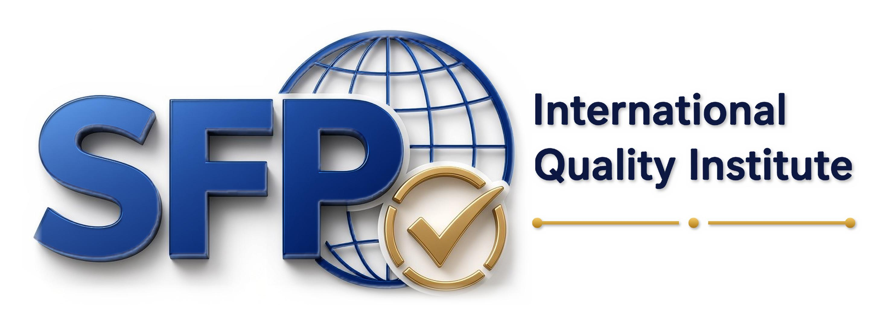

QUALITY
QUALITY
ISO 9001:2015
Quality Management Systems
Understand the principles of quality management, consistent processes, and continual improvement.

Develop your knowledge with ISO certified courses. Explore training in quality, environmental management, occupational health and safety, information security, risk management, and more

Build your understanding of international management system standards and develop knowledge you can apply in your professional journey.
QUALITY
Understand the principles of quality management, consistent processes, and continual improvement.
Explore workplace hazard identification, risk prevention, and occupational safety systems.
Learn about environmental responsibilities, impact management, and sustainable practices.
Discover information security management, risk assessment, and the protection of data.
Learn about food safety hazards, risk controls, and practices that help protect food throughout the supply chain.
Explore service management processes, service delivery, and continual improvement in IT service organizations.
Understand how to identify, analyze, evaluate, and manage risks to support informed organizational decisions.
Learn how organizations can monitor energy use, improve energy performance, and identify opportunities for greater efficiency.
*Self-paced study applies where offered. Check individual course pages for delivery format, duration, and certificate details.
SFP International Quality Institute offers training in ISO 9001:2015 for Quality Management Systems, ISO 14001:2015 for Environmental Management Systems, ISO 45001:2018 for Occupational Health and Safety, ISO 22000:2018 for Food Safety Management Systems, ISO/IEC 27001 for Information Security Management Systems, ISO/IEC 20000-1:2018 for IT Service Management Systems, ISO 31000 for Risk Management, and ISO 50001 for Energy Management Systems.
Our courses may be useful for students, working professionals, managers, quality officers, safety practitioners, auditors, and anyone seeking to understand management system standards. Check the requirements for your chosen course before enrolling.
Many introductory ISO courses are suitable for beginners. You can start by learning the purpose, principles, and requirements of your chosen standard. More advanced courses, such as auditor training, may require prior knowledge or experience.
The institute offers online ISO learning. You can access course materials and study remotely according to the learning arrangements provided for your selected course. Check each course page for details about access and study requirements.
Yes! At SFP International Quality Institute, learners receive a certificate upon successful completion of their chosen course. Our courses cover a range of ISO management system standards, helping you build your knowledge and demonstrate your commitment to professional development.
ISO 9001 focuses on quality management, customer satisfaction, and improving organizational processes. ISO 14001 focuses on environmental management, including managing environmental impacts and improving environmental performance. Both provide frameworks organizations can use to improve their management systems.
Choose a course based on your interests, responsibilities, or career goals. ISO 9001 is relevant to quality management; ISO 14001 to environmental management; ISO 45001 to workplace health and safety; ISO 22000 to food safety; ISO/IEC 27001 to information security; ISO/IEC 20000-1 to IT service management; ISO 31000 to risk management; and ISO 50001 to energy management.
Completion time varies by course, course level, and learning format. Review the course details for the expected duration, study materials, and any assessment deadlines before beginning your training.
No. ISO training helps individuals understand a standard or develop relevant skills. Organizational certification involves an independent assessment of an organization's management system by an appropriate certification body. Completing a training course alone does not certify an organization as meeting an ISO standard.